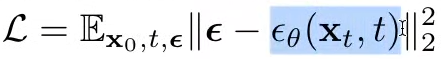

1 Intro
The eleventh lesson of fast.ai.
2 Lesson Overview
The course may overrun (far) further than the original intended 8 lessons. We covered another method of doing guidance, by modifying the guidance_scale value over time. We also throughly covered how to read and implement new research papers using the new DiffEdit paper as an example. The latter guide was really helpful. Lastly we spent some more time on learning matrix multiplication methods in Python.
3 Lecture Notes
The original guidance equation we used was pred = u + g*(t-u)
We can rescale the difference between t-u, or rescale the pred entirely. The former improves image quality, the latter however generates a different looking image.
Most importantly, either of these and specifically the latter doesn’t just make images look more detailed, but can fix errors. In our example, a horse had 3 legs instead of 4 before rescaling!
Another idea: why not lower the guidance_scale value over time?
We have high guidance at the start, to tell the model what image it needs to draw. Once it has ‘locked on’ to a result, we can have less guidance. This approach also can help!
These sorts of changes you could figure out yourself, but often others already have, and it can be hard sometimes to tell that.
3.1 DiffEdit paper:
Arxiv is a preprint paper. It contains papers before they gave been peer reviewed. Regardless, they are useful because you can test the concepts and code yourself and look on discussions online to see if the paper is good. Waiting until peer review takes too long in such a fast moving field.
Jeremy recommends Zotero as free software to store, sort, and annotate papers.
Reading papers is hard. The goal isn’t to understand the entire paper at first. Focus on the basic ideas so that we can look at the code and diagrams to see how it works and then we can work backwards. Writing your own implementation of a paper is the best way to understand it.
Start by reading the abstract.
It uses text-condition diffusion, so what we’ve being doing.
Semantic image editing is image generation where the generated image is as similar as possible to a given input image.
I didn’t know this, but abstracts can contain diagrams, this one is really useful!

Currently techniques require you to draw a mask around the subject you want to change in the input image. This paper has an apporach to generate the mask for you!
Papers are full of citations. Don’t read all of them, it’s impossible because every paper will have even more citations to read, and you’ll end up spending too much time on it. Focus on only the very important/relevant papers.
If we want to turn a dog into a cat, we want to keep the dog’s pose. Older papers used a mask to delete the area and regenerate, but that can’t keep the pose. This paper’s method attempts to keep the pose!
In a paper, the first thing we need to understand is the aim of the paper. This context makes everything else make much more sense. To do this, we start with the abstract, then look at the references, experiments and examples. Often we skip a lot of sections and text.
The related work section is important to study if you want to do a deep dive. There’s a lot of repetition in the paper of the papers cited and that’s fine to skip. The last lines of related work are normally the most interesting. If you wanted to do the best possible to get the best ideas, spending ages on related work is important.
The background section. This section is often the scariest. It’s the maths behind how the model works. No one in the world looks at the background and gets it immediately.
In this case, first you need to really know DDPM well. This could take a very long time of reading previous papers, testing it yourself, and talking to others. After that, then it makes sense quickly. The background is meant to be a reminder of something you already know, not a place to learn it from scratch.
Every diffusion paper has these equations, and lesson 9B covers them properly. The background is often to look cool for reviewers. The main goal of reading it is to know the symbol’s definitions so that you can understand them later on in the paper.
How should you approach reading the background section?
First learn the greek alphabet properly. We can use a program to take images of maths and tell us their LaTex representation. This allows us to google the terms. Instead, we can just download the paper in LaTex format.
The fancy L is just the loss function.
After some googling we find that:
The L2 norm has the subscript 2. L2 norm is just denoted with a subscript 2, and a top 2 for squared.
This means that the entire thing in the modulus is just Sigma(x^2)!
Trying to find what E is!
Looking at the latex paper file:
It’s mathbb{E}, now let’s google it!
It’s the expected value operator. Expected value is a weighted average. It’s Sum \((probability*value)\) and gives the average result.
Epsilon is the noise. It is distributed normally with a mean of 0 and variance of I.
I is the identity matrix, covered more in lesson 9b.
Epsilon subscript 0 is a estimate for the noise.
Looking at the loss equation:

We have an expression for the noise, Epsilon, and for a prediction of it, Epsilon_0. We subtract them from eachother, square it, and find the expected value.
Does it look familiar to something we know?
The loss function is just MSE but with some tweaks! There’s no 1/n and there’s L2 normalisation.
The point is, this scary looking loss equation boils down to something we’re already well familiar with!
Once you understand that we’re working with a concept we already know, the equations make sense. Remember that this is a background section. It tells us about prior concepts and how they changed them.
In practice, often none of the further background matters. There’s only a subsection of the background we need to understand for our purposes. You don’t need to read the whole thing.
The diagram in the paper is often the best part in understanding it.
The strange O means nothing: unconditional diffusion. In my terms, with a prompt of ““.
Step 1: We make a mask based on the differences between the denoising of the original prompt (zebra) and the denoising on a new prompt (horse). Step 2: Take the Horse, add noise to it. Step 3: During inference, while we turn the noised horse, we make the background stay the same.
Jeremy skips the Theoretical analysis. It’s needed to get past peer review. It proves more concretely why this method is better than others. This is needed from a science pov, but as appliers we can clearly see it works well and test it ourselves so we don’t need to throughly know the proof.
The Experimentation setup shows us what datasets they used and so on. They use metrics like CSFID and FID. We don’t usually care for out interests either. This is needed because good metrics are proof to explain why the method is better for reviews.
But here we find some examples. It’s very cool to see, and also lets you understand how good and bad the technique is in certain areas.
Looking at these examples, we thought of a realisation:
The generated masks cover the core subject in the image, but what if we wanted to change both the core subject and the rest of the image? It can’t have its single mask cover both properly to change both. For example, changing a bowl of apples to a bowl of oranges in a purple tinged photo.
The conclusion section almost never adds anything on top of what we’ve already read.
However, the appendices afterwards are useful for more examples. Often some of the most interesting examples are there.
It’s important to remember that this wasn’t a carefully chosen paper. It was just the most interesting paper this week. This walkthrough was the typical paper reading experience.
Challenging homework given is to try and implement some of this paper. To do it, lesson 9 contains what you need.
4 Takeaways on how to read a ML paper:
- We often read papers from Arxiv that are not peer reviewed yet because the field moves too quickly for that and because we can test it ourselves and see discussions online.
- The first thing to understand is the aim of the paper. This makes everything else make more sense in context.
- To do so, don’t get bogged down in details straight away. Focus on the basic ideas so that we can look at the code and examples to understand how it works.
- Writing your own implementation of a paper is the best way to understand it.
- Papers are full of citations but you can’t read all of them because there is too many and they will have their own citations. Focus only on very relevant citations.
- Start by reading the abstract. Focus on the references, experiments and examples. Skip a lot of text.
- The related work section is important if you want to do a deep dive. This is needed if you want to get the best possible ideas. Regardless, the last lines of the section are often the most interesting.
- The background section is often the scariest. It’s the maths behind the paper. It takes time to understand and that’s okay. It’s meant to be a reminder of something you already know, not an introduction.
- The main goal of reading the background section should be to understand the symbol definitions used in the paper for later reading.
- In practice, after you understand the main concepts and symbol definitions, reading the background further isn’t useful.
- The diagram is often the best part of the paper to understand it.
- Skip the theoretical analysis at first. It’s a proof of why the paper’s approach is better than others. Similarly, the experimentation setup uses metrics to do so too.
- However, the experimentation setup can have some useful examples to understand the technique.
- The conclusion normally never adds anything on top of what we’ve already read.
- The appendices often contain really interesting examples so check them out!
In conclusion, first try and understand the goal and basic ideas of the paper, then use the diagrams and examples to understand further. Read different sections depending on your interests, so skip parts of sections and/or full sections if needed.
5 Homework:
Implement the DiffEdit paper. I assume this means in the Stable Diffusion notebook, write the code for DiffEdit to work.
6 Useful maths resources
- Maths cheat sheet https://ourway.keybase.pub/mathematics_cheat_sheet.pdf and wikipedia https://en.wikipedia.org/wiki/Glossary_of_mathematical_symbols#Other_brackets page for maths notation.
- pix2tex to convert images of equations to latex https://github.com/lukas-blecher/LaTeX-OCR.
- Anki deck for Greek letters that are used in science and maths https://ankiweb.net/shared/info/2118139507.
- Detexify web page to draw symbols to see their latex. https://detexify.kirelabs.org/classify.html.
7 Links
- As I am doing this course as it is released privately live, I cannot share links to the lesson.